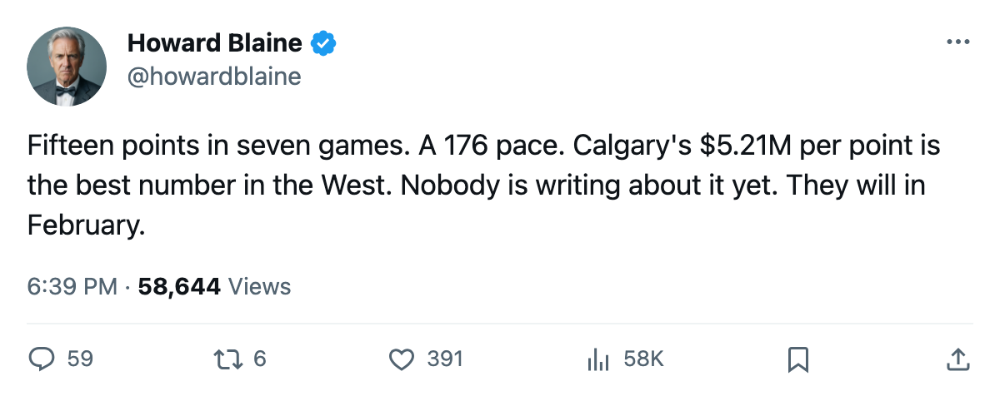
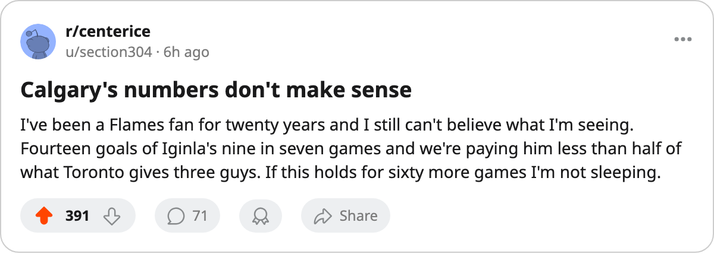

Calgary Scores the Most Goals in the West and Spends the Least for Each One
Jarome Iginla's 176-point pace leads the league, and the $5.21M per point behind him is a number no other Western club matches
 Howard BlaineSenior writer, The Blaine Rankings · The Hockey Gazette
Howard BlaineSenior writer, The Blaine Rankings · The Hockey GazetteThe  Calgary Flames Flames are 3-2-0 through 7 games, and
Calgary Flames Flames are 3-2-0 through 7 games, and  Jarome Iginla86 has 15 points. His pace of 176 over 82 games is the highest in the league, and the gap between him and the next man,
Jarome Iginla86 has 15 points. His pace of 176 over 82 games is the highest in the league, and the gap between him and the next man,  Markus Naslund91 at 141, is 35 points per season. That is the distance between a first-team All-Star and a 12th-best forward.
Markus Naslund91 at 141, is 35 points per season. That is the distance between a first-team All-Star and a 12th-best forward.
Calgary has scored 25 goals in 7 games, or 3.57 per game, the most of any club in the Western Conference and the second-best in the league behind  Tampa Bay Lightning Tampa Bay's 3.60 through 5 games. On the payroll side, their $52.08M is the 22nd-highest in the league, and their cost per point sits at $5.21M, the lowest figure of any Western club.
Tampa Bay Lightning Tampa Bay's 3.60 through 5 games. On the payroll side, their $52.08M is the 22nd-highest in the league, and their cost per point sits at $5.21M, the lowest figure of any Western club.
Iginla's contract runs $11.09M with 4 years left, which means the Flames are paying their best player at a level that, in this league's current economy, barely reaches the middle of the payroll. He is 28 years old, carries a 94 overall in the Book and sits on a Development Index that has him up 1 point above his base grade. Last season he managed 128 points in 76 games, good enough for the Maurice Richard Trophy and the Lester B. Pearson Award. His current pace would clear that mark by 48 points. The question at this desk in late October is whether the supporting cast makes that pace plausible.
Three veterans behind the one heater
The supporting numbers are unusual for a team that spends like a middle-tier club.  Craig Conroy76, 34 years old and a fifth-round pick out of the 1990 draft, carries 10 points in 7 games at a pace of 117.
Craig Conroy76, 34 years old and a fifth-round pick out of the 1990 draft, carries 10 points in 7 games at a pace of 117.  Chris Clark69, also 7 games in, has 9 points with 8 of them on the assist side. Those two men have combined for 19 points, which means Iginla accounts for roughly 44 percent of Calgary's offense, a heavy load but not the load-bearing single-man operation that Vancouver's model has become.
Chris Clark69, also 7 games in, has 9 points with 8 of them on the assist side. Those two men have combined for 19 points, which means Iginla accounts for roughly 44 percent of Calgary's offense, a heavy load but not the load-bearing single-man operation that Vancouver's model has become.
The depth chart tells you why this team can sustain it. Behind Iginla, Conroy and Clark, the Flames dress  Dean McAmmond77 at a 85 overall,
Dean McAmmond77 at a 85 overall,  Martin Gelinas74 at 80, and on the back end
Martin Gelinas74 at 80, and on the back end  Sami Salo73 at 81. The goaltending is
Sami Salo73 at 81. The goaltending is  Roman Turek79 at 86, who has 4 wins in 6 starts and a 3.29 goals-against average. None of these names belongs in a conversation about the league's best teams, and the whole roster's payroll would rank 9th in the league on its own.
Roman Turek79 at 86, who has 4 wins in 6 starts and a 3.29 goals-against average. None of these names belongs in a conversation about the league's best teams, and the whole roster's payroll would rank 9th in the league on its own.
The desk will track through the season whether the efficiency holds once the schedule deepens. The Flames have played 7 games. Their remaining 75 include 18 divisional contests against  Colorado Avalanche,
Colorado Avalanche,  Edmonton Oilers,
Edmonton Oilers,  Vancouver Canucks and
Vancouver Canucks and  Minnesota Wild, four clubs whose payroll sits above Calgary's in total dollars. The $5.21M per point is a number computed on 10 points earned through 7 games. It is the league's most efficient start by a wide margin, and it is a number that gets harder to hold the longer the season runs. Calgary's arithmetic is the best in the West as things stand.
Minnesota Wild, four clubs whose payroll sits above Calgary's in total dollars. The $5.21M per point is a number computed on 10 points earned through 7 games. It is the league's most efficient start by a wide margin, and it is a number that gets harder to hold the longer the season runs. Calgary's arithmetic is the best in the West as things stand.
What the 176 pace means for the Hart conversation
Iginla won the Pearson Award last season as the league's most outstanding player as voted by his peers. He did not win the Hart; Markus Naslund did, at 138 points. Iginla finished fourth in that Art Ross race at 128. The pace difference this year is not small enough to settle a Hart race by late October, but it establishes the floor: if Iginla plays at his current clip for the full 82, no one else in this league closes the gap. The next-closest pace belongs to  Richard Park79 at 164, and Park is a 79 overall who scored 32 points last year at a 34-point-per-82-game pace. The base rates do not support Park holding that pace. Iginla's do.
Richard Park79 at 164, and Park is a 79 overall who scored 32 points last year at a 34-point-per-82-game pace. The base rates do not support Park holding that pace. Iginla's do.
The desk's standing view is that the standings in April track the standings in late October in roughly 80 percent of divisions. Calgary sits second in the Northwest at 10 points, behind Calgary Flames themselves at 10, and the gap between 1st and 8th in the West is 3 points after 7 games. That gap is noise. The cost-per-point gap is not; it reflects payroll structure, and payroll structure does not shift within a season.
| player | pts | GP | pace | age | overall |
|---|---|---|---|---|---|
| Iginla | 15 | 7 | 176 | 28 | 94 |
| Naslund | 12 | 7 | 141 | 32 | 91 |
| Park | 12 | 6 | 164 | 29 | 79 |
| Legwand | 11 | 6 | 150 | 25 | 90 |
| Murray | 11 | 6 | 150 | 32 | 85 |
| Kariya | 11 | 6 | 150 | 31 | 89 |
Iginla has 4 years and $11.09M left on his deal. Calgary has the cheapest points in the West, the second-most goals per game in the league, and a 28-year-old who scores at a rate the rest of the field cannot reach on their current contracts. Whether it reads the same in February depends on whether Conroy keeps assisting at this clip, whether Turek's 3.29 improves, and whether the 18 divisional games that come next reveal the same cost advantage against clubs with more depth on the back two lines.

